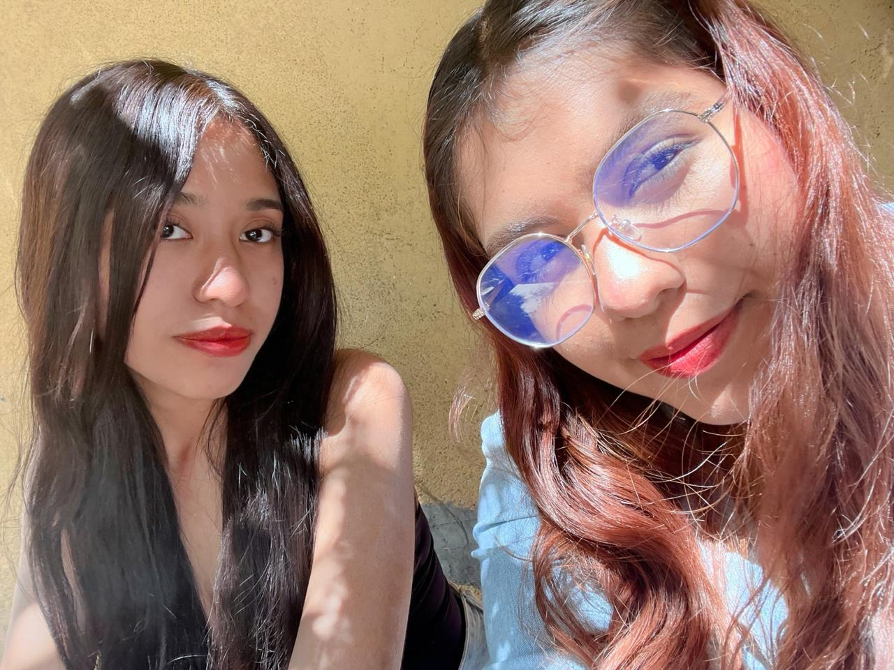
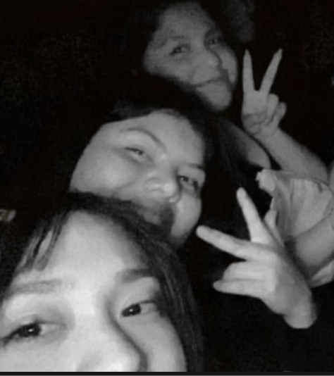
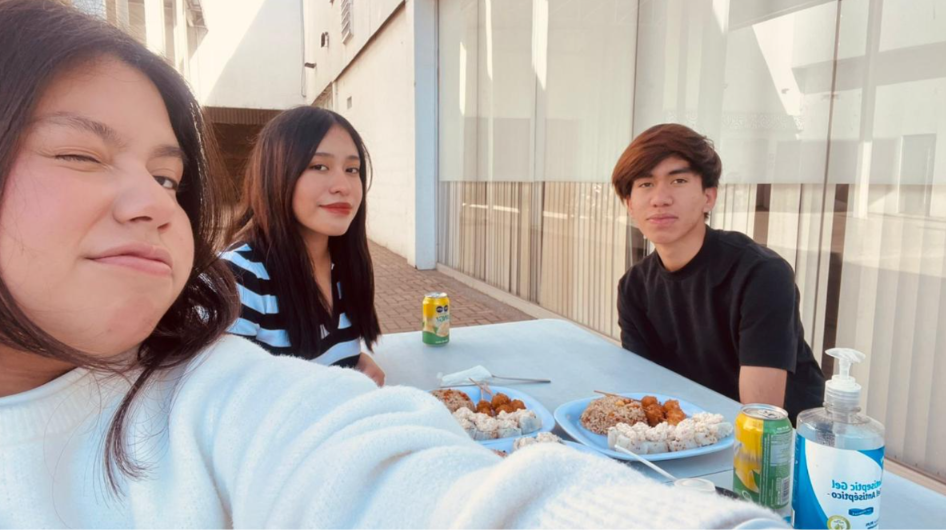
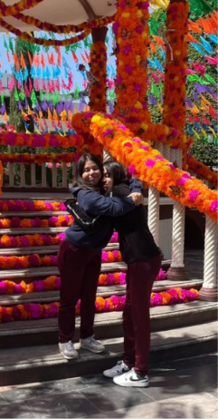

XIMENA
A Xime la conoci en la universidad, es una persona muy agradable y divertida, siempre me hace reir y me apoya en todo momento.
1 años de amistad
Las personas especiales que me acompañan, comparten momentos inolvidables y hacen mi vida más feliz.
¡Amigos!
Lo que más disfrutamos hacer cuando nos reunimos:

A Xime la conoci en la universidad, es una persona muy agradable y divertida, siempre me hace reir y me apoya en todo momento.
1 años de amistad
Miguel es mi mejor amigo, igual que liz desde casi 8 años, aunque me gusta llamarlo por su apodo "Mague"
7 años y medio de amistad
Tere la conoci tiempo despues, como una compañera nueva, rapidamente nos volvimos muy cercanas
5 años de amistad
Liz es mi mejor amiga desde hace casi 8 años, es a la persona que le puedo contar todo sin sentirme juzgada, siempre me apoya y me hace reir, emos pasado momentos muy bonitos
7 años de amistad